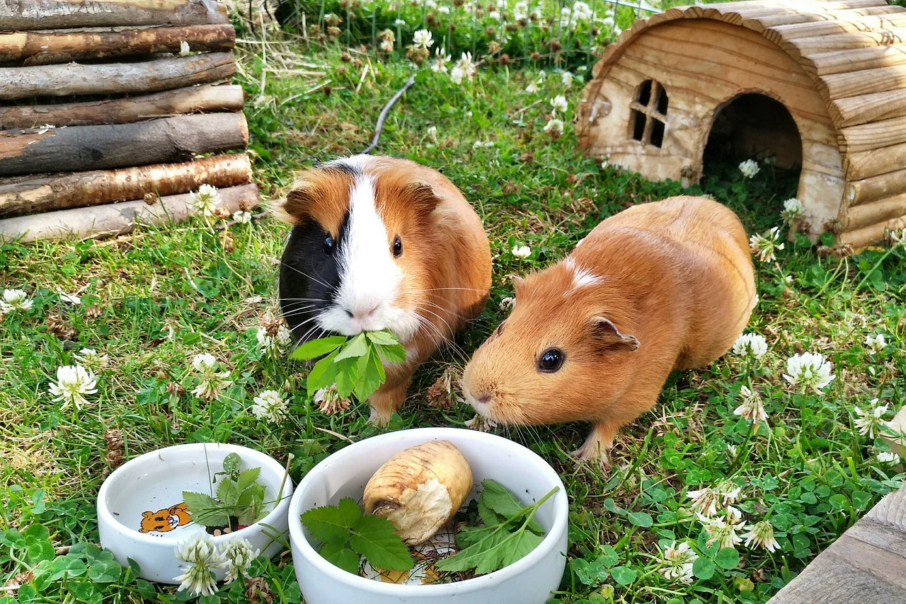

Welcome to the PurrPets Cavy Corner! Guinea Pigs are social, expressive, and famous for their "wheek-ing" greeting. They aren't pigs, and they aren't from Guinea—but they are 100% adorable.

Follow the PurrPets trail to become an expert in Guinea Pig care:
| Category | What You'll Learn | Link |
|---|---|---|
| GP Diet & Vitamin C | Why they need a daily dose of fresh veggies. | Go → |
| C&C Housing | Building the ultimate "Grid and Coroplast" home. | Go → |
| The Breed Gallery | Abyssinians, Teddies, and the long-haired Coronet. | Go → |
| Social Life & Bonding | Why companionship is a legal requirement in some countries! | Go → |
Guinea Pigs are unique among rodents because of their vocalizations. They will "Wheek" (a loud whistle) when they hear the refrigerator door open, "Purr" when they are being petted, and "Popcorn" (hop randomly) when they are happy!